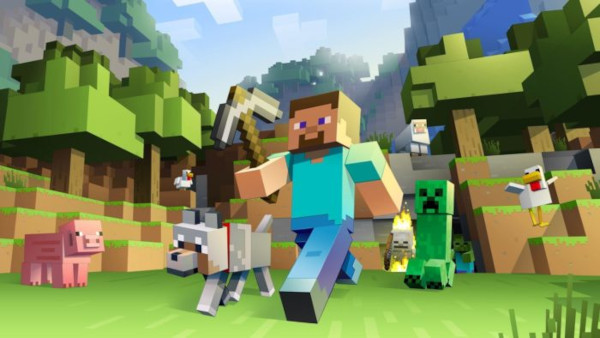

Minecraft: Conheça a história do jogo para PC mais vendido de todos os tempos

10 anos depois de sua idealização, Minecraft fecha 2019 sendo um dos jogos para PC mais populares da década
Índice
Markus person, o criador do minecraft
Herobrine, a lenda sombria do Minecraft
Ray tracing e a magia do minecraft
Para se ter uma ideia, canais no YouTube voltados para o conteúdo do game tornaram-se a opção favorita entre as crianças e não se espante caso uma delas trocarem televisão por gameplays de Minecraft.
Mas não pense que a sua popularidade seja qualquer impedimento, independente da faixa estária. Apesar da simplicidade qualquer pessoa pode jogar Minecraft, existem vários modos e a liberdade para deixar o jogo mais complexo, o que explica tamanha comoção. Criado na Suécia, em 2009, o game já estendeu seus domínios a 105 países e é jogado atualmente por mais de 100 milhões de pessoas.